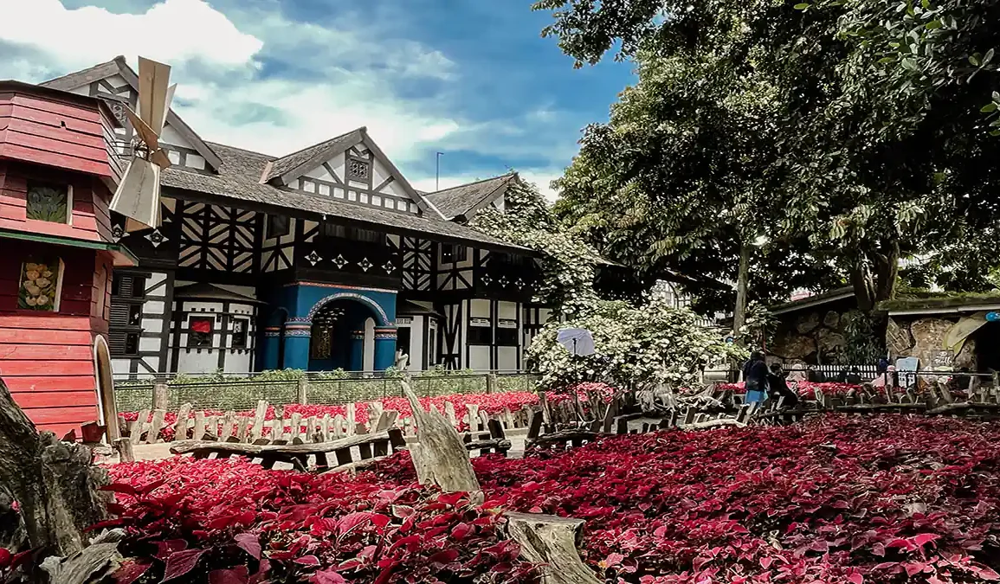
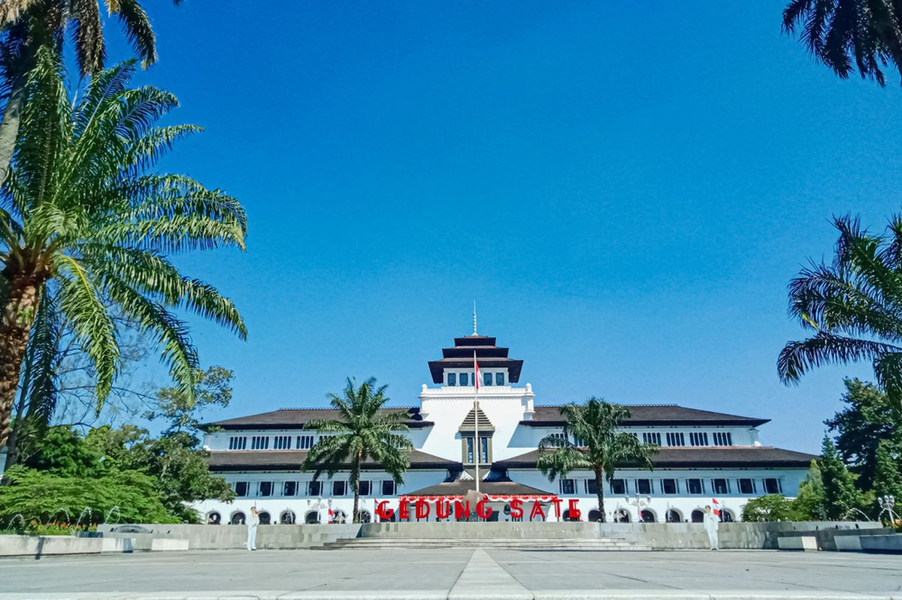

🗺️ Destinasi Pilihan

🗻 Kawah Putih
Danau vulkanik eksotis dengan pemandangan mistis dan udara sejuk pegunungan.
Klik untuk Detail >> ✨

🐑 Farmhouse Lembang
Peternakan ala Eropa dengan arsitektur unik, hewan lucu, dan banyak spot foto menarik.
Klik untuk Detail >> ✨

🏛️ Gedung Sate
Landmark bersejarah dengan arsitektur Art Deco yang ikonik dan megah.
Klik untuk Detail >> ✨

🛍️ Braga Citywalk
Pusat gaya hidup modern di tengah pesona Jalan Braga yang bersejarah.
Klik untuk Detail >> ✨